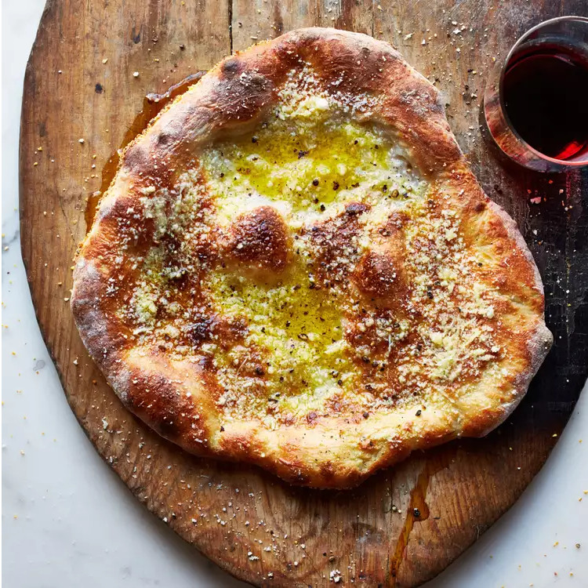
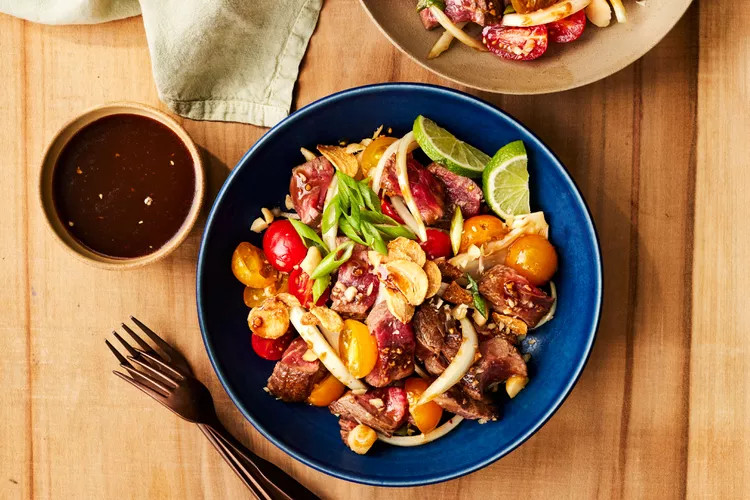

Odin Recipes
Cacio e Pepe Pizza

Description:
At Sbanco restaurant in Rome, chef Stefano Callegari takes his time making this perfect pizza dough, topping it with the flavors of cacio e pepe pasta. He's also devised a clever trick: putting a bit of crushed ice on the dough as it goes into the hot oven to keep the center moist and tender while the bottom and edge become crisp and crackling. It's worth noting that this recipe is largely about the dough—the topping, while delicious, is relatively scant.
Ingredients:
- 1/8 teaspoon active dry yeast
- 7 1/4 cups all-purpose flour
- 1 tablespoon kosher salt
- Canola oil, for greasing and brushing
- Cornmeal, for sprinkling
- Crushed ice
- 1 1/2 cups finely grated Pecorino Romano cheese (4 ounces)
- Extra-virgin olive oil, for drizzling
- Freshly ground black pepper
Steps:
- In a medium saucepan, heat 3 cups of water to 80°. Transfer 2 tablespoons of the warm water to a small bowl and whisk in the yeast. In a large bowl, combine the flour with the remaining warm water and stir with a wooden spoon until a shaggy dough forms. Cover both bowls with plastic wrap and let stand for 30 minutes.
- Mix the salt into the yeast and add to the dough in the large bowl. Knead until all of the liquid is absorbed; the dough will be quite wet. Cover with plastic wrap and let stand at room temperature for 30 minutes.
- With a dampened hand, lift one edge of the dough, stretch it up and fold it over the top of the dough. Turn the bowl a quarter turn, lift up the edge of the dough, stretch it up and fold it over the top. Repeat until you've turned the bowl all the way around. Cover the bowl with plastic wrap and let the dough stand for 30 minutes. Repeat the lifting and folding one more time, then transfer the dough to a large oiled bowl. Cover with plastic wrap and let stand at room temperature until tripled in bulk, about 12 hours.
- Turn the dough out onto a lightly floured work surface and cut into 6 equal pieces. Take 1 piece of dough and pull the edge into the center, then place seam side down on the work surface. Roll the dough into a ball and set on an oiled baking sheet. Repeat with the remaining 5 pieces of dough, arranging them 3 inches apart on the sheet. Brush the rounds with canola oil and cover with plastic wrap. Refrigerate for at least 8 or up to 12 hours.
- Let the dough stand at room temperature for 30 minutes. Preheat the broiler. Place an inverted baking sheet or a pizza stone in the oven 8 inches from the heat. Invert a second baking sheet and dust liberally with cornmeal.
- On a lightly floured surface, use your fingertips to press 1 ball of dough into a 6-inch round, leaving a border around the edge and keeping the center slightly thicker than the rest. Use your palms to press the dough into a 10- to 12-inch round. Transfer to the cornmeal-dusted sheet and slide onto the hot sheet in the oven. Place 2 tablespoons of ice in the center of the dough and bake for about 8 minutes, until golden. Immediately sprinkle 1/4 cup of the cheese all over the pizza, drizzle with olive oil and season with pepper. Serve immediately. Repeat to make 5 more pizzas.
Beef Poke

Description:
A unique take on traditional Hawaiian poke, succulent beef pieces, fresh tomatoes, and sweet onion slices are tossed in glossy soy sauce mixture sweetened with brown sugar.
Ingredients:
- 1 1/4 pound (1-inch-thick) beef tenderloin steaks (3 to 4 steaks, see Note)
- 1 1/4 teaspoons kosher salt
- 1 tablespoon canola oil
- 1/4 cup soy sauce
- 3 tablespoons mirin
- 2 tablespoons toasted sesame oil
- 1 tablespoon light brown sugar
- 1 1/2 teaspoons cornstarch
- 2 teaspoons minced garlic, divided
- 1 cup grape tomatoes, halved lengthwise
- 2/3 cup sliced sweet onion
- 1/3 cup sliced scallions, plus more for garnish
- 3 tablespoons roughly chopped salted roasted macadamia nuts, plus more for garnish
- 1 1/2 tablespoons fresh lime juice
- Fried garlic, for garnish (such as Maesri)
- Lime wedges, for serving
Steps:
- Place steaks on a plate, and season evenly with salt. Let stand, uncovered, at room temperature 1 hour.
- Heat canola oil in a large skillet over high until shimmering. Pat steaks dry with paper towels. Add steaks to skillet; cook 2 minutes per side. Turn and sear edges of steaks until browned, about 1 minute. Remove steaks from skillet, and transfer to a cutting board; let rest 10 minutes. Wipe skillet clean.
- Meanwhile, whisk together soy sauce, mirin, sesame oil, brown sugar, cornstarch, and 1 teaspoon garlic in skillet; bring to a simmer over medium, whisking and scraping bottom of skillet. Simmer, whisking constantly, until sugar dissolves and mixture thickens to a loose, syrup-like consistency, 15 to 30 seconds.
- Cut steaks into 1/2-inch cubes. Stir together steak, tomatoes, sweet onion, scallions, macadamia nuts, lime juice, soy sauce mixture, and remaining 1 teaspoon garlic in a medium bowl until combined. Garnish with fried garlic and additional scallions and macadamia nuts. Serve with lime wedges.
Lemon Bars
Description:
Smooth, sweet-tart lemony custard sits atop the buttery, slightly salty shortbread crust in these bars for an unbeatable combination of flavors and textures.
Ingredients:
- Cooking spray
- 1 1/4 cups (5 1/3 ounces) all purpose flour
- 1/3 cup granulated sugar
- 1 1/2 tablespoons white rice flour (such as Bob’s Red Mill)
- 1 1/2 teaspoons kosher salt
- 10 tablespoons (5 ounces) unsalted butter, cut into cubes and softened
- 1 teaspoon vanilla extract
- 3 tablespoons lemon zest plus 3/4 cup fresh juice (from 5 to 6 large lemons [1 1/2 pounds total])
- 1/2 teaspoon kosher salt
- 1 cup granulated sugar, divided
- 4 large egg yolks
- 3 large eggs
- 2 tablespoons white rice flour
- 5 tablespoons (2 1/2 ounces) unsalted butter, cut into cubes and softened
- Powdered sugar
Steps:
- Prepare the Crust: Preheat oven to 350°F. Grease an 8-inch square baking pan with cooking spray; line bottom and sides of pan with aluminum foil, leaving a 2-inch overhang on all sides.
- Process all-purpose flour, sugar, rice flour, and salt in a food processor until well combined, about 5 pulses. Add butter and vanilla; pulse just until a dough ball forms, about 30 pulses. Press dough into an even layer in prepared baking pan, very lightly greasing hands with cooking spray, if needed.
- Bake in preheated oven until evenly golden brown, 24 to 28 minutes.
- While Crust bakes, prepare the Lemon Custard: Whisk together lemon zest and juice, salt, and 3/4 cup of the sugar in a medium saucepan until well combined. Heat over medium, stirring occasionally, until sugar dissolves and mixture is steaming, about 4 minutes.
- Meanwhile, whisk together egg yolks, eggs, rice flour, and remaining 1/4 cup sugar in a medium bowl until well combined. Gradually add hot lemon juice mixture to egg mixture, whisking constantly, until combined; add mixture to saucepan. Cook over medium-low, whisking constantly, until mixture coats the back of a spoon (it should hold a trail when a finger is run through) and an instant-read thermometer registers 175°F to 180°F, 2 to 4 minutes. Remove from heat.
- Gradually whisk in butter, a few cubes at a time, until melted and well combined. Strain mixture through a fine mesh strainer into a medium bowl, pressing through as much custard as possible; discard strained solids. Loosely cover Lemon Custard, if needed, until Crust is ready.
- Spread Lemon Custard in an even layer over hot Crust using a small offset spatula. Bake at 350°F until edges are slightly puffed and somewhat matte and Lemon Custard is mostly set, 10 to 12 minutes. (Custard may jiggle slightly as a whole.) Remove from oven, and let cool slightly in baking pan on a wire rack at room temperature, about 1 hour. Chill, uncovered, in refrigerator until completely cool, at least 1 hour or up to 12 hours. (If chilling for longer periods of time, loosely cover bars with aluminum foil once completely cool; see Note.)
- Run a sharp knife around edges to loosen bars from baking pan; using excess aluminum foil as handles, remove bars from pan. Trim edges if desired, and cut into 16 (1 3/4-inch) bars using a large sharp knife, wiping blade clean between cuts. Dust bars with powdered sugar just before serving.